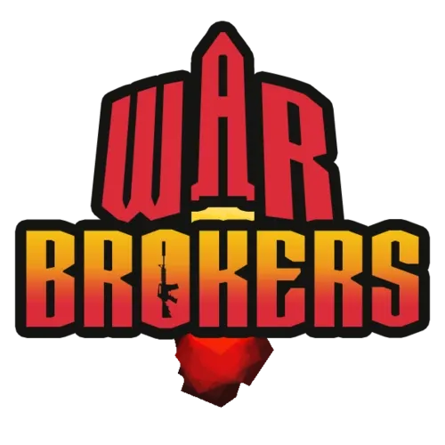
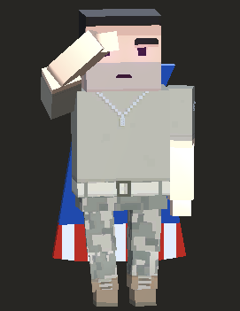

Community
A future directory for community server invites, tournament Discords, squad spaces, creators, and contributor links.
Coming Later
War Brokers community hub
A community-built front desk for War Brokers resources, tools, history, and player-made projects.
Start here
Use the hub to jump between community projects, active Discord spaces, tournament links, and a timeline of game history including weapons, maps, and update releases.
Browse the directory of community-made tools, sites, APIs, bots, mods, and utilities.
Enter ProjectsA future directory for community server invites, tournament Discords, squad spaces, creators, and contributor links.
Coming LaterExplore update releases, weapon additions, map additions, events, community projects, and major War Brokers milestones.
Enter Timeline
Site creator
You all know me as projelly (unless you live under a rock, which I no doubt believe a large percentage of WB players do), or just Jelly. As the ending for my love and hate relationship with WB comes closer, I wanted to give back to this game and community. It got me through a lot of troubling and depressing times. The people and this game have given me so much and I'm so very grateful for it. It's safe to say a large part of me grew up through this community. This website is a thank you, a thank you to everyone who supported me, who laughed with me, who fought with me, and to everyone who gave me so much joy. I hope you enjoy it, continue to contribute, make it better.